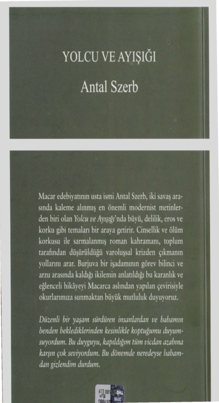

Ondan sonra rahatça yatağına yattı, ben yatağın kıyısına oturdum. Ölümcül uyku durumu yaklaşınca beni kendine çekti ve öptü. Kolları üzerimden düşünce- ye dek öptü durdu. Bunlar kardeşçe öpücükler değildi Mihaly, bu doğru. O zaman artık birer kardeş değil de yaşamaya devam eden biri ve ölen biriydik... O zaman bu yanlış değildi sanırım."
Çok uzun bir süre sustular.
"Eva, seni aramayayım diye niye haber gönderdin?" diye sordu sonunda Mihaly. "Benimle neden buluşmak istemiyorsun?"
''Ah, yani sen bunu hissetmiyor musun, bunun ola- naksız olduğunu anlamıyor musun? İkimiz baş başay- ken baş başa olamayız... Tamas her an burada olabilir ve şimdi artık Ervin de... Seninle birlikte olamıyorum Mihaly, hayır."
Ayağa kalktı.
"Bir dakika daha otur," dedi Mihaly sessizce, bu ses tonu insanın en öfkeli olduğunda kullandığı ses to- nuydu. "Hindistan'a gideceğin doğru mu?" diye sordu. "Uzun bir süre için mi?"
Eva başını salladı.
Mihaly ellerini ovuşturdu.
"Gerçekten gidiyor musun ve seni bir daha görme- yecek miyim?"
"Gerçekten. Sen ne olacaksın?"
"Benim için yalnızca bir tek şey olabilir: Kendi ölü- mümle ölmek. Tıpkı... Tıpkı Tamas gibi."
Sustular.
"Bunu ciddi ciddi mi düşünüyorsun?" diye sordu sonunda Eva.
301
"Hem de çok ciddi. Roma'da kalmamın hiçbir an- lamı yok. Yurda dönmem ise ondan da anlamsız. Hiçbir şeyin anlamı yok artık."
"Sana yardım etmek olanaksız mı?" diye sordu Eva inandırıcılıktan uzak.
"Hayır. Daha doğrusu bir yolu var yine de. Benim için bir şey yapabilirsin Eva."
"Neymiş o?"
"Söylemeye cesaret edemiyorum, öyle zor ki." "Söyle."
"Eva... Ben ölürken yanımda ol... Tamas'ın yanında olduğun gibi Eva."
Eva düşünceye daldı.
"Yapacak mısın? Yapacak mısın? Eva, yalnızca bunu rica ediyorum senden ve ondan sonra da dünya dünya kaldıkça başka hiçbir şey."
"Pekala." "Söz mü?" "Söz."
302
6
Erzsi Paris'e geri dönmüştü. Janos'a telefon etti ve Janos akşam yemeğine çıkmak üzere kendisini almaya geldi, Erzsi, Szepetneki'nin dalgın olduğunu ve kendisi- ni gördüğü için özellikle sevinmediğini düşündü. Janos şunları söyleyince bu kuşkusu arttı:
"Bugün İranlıyla yiyeceğiz akşam yemeğini." "Neden? Daha ilk gece!"
"Haklısın ama elimden bir şey gelmez. Bunu üste- ledi durdu ve onun gönlüne göre davranmak zorunda olduğumu biliyorsun."
Yemek sırasında Janos çoğunlukla sustu, konuşma Erzsi ile İranlı arasında geçti.
İranlı yurdundan söz ediyordu. Orada güç ve ro- mantik bir uğraşıydı sevda; orada durum şimdi de ay- nıydı, sevdalı gencin üç metre yüksekliğindeki bir taş duvarı tırmanıp aşması, taptığı hanımın babasının bah- çesinde gizlenmesi ve hanımın ona eşlik edenlerle bir- likte o yana doğru gezineceği anı kollaması gerekiyor- du. Bu sırada gizlice bir iki çift söz edebilirlerdi; ama genç yaşamıyla oynamaktadır.
303
"Peki bu iyi bir şey mi?" diye sordu Erzsi.
"Evet, çok iyi," diye yanıtladı İranlı, "çok iyi. İn- san, beklemesi, savaşım vermesi ve acı çekmesi gere- ken şeylere çok daha fazla değer veriyor. Çoğu zaman Avrupalıların aşkın ne olduğunu bilmediklerini düşü- nürüm. Aslında teknik olarak bilmiyorlar da gerçek- ten."
Gözleri alevlenmişti, jestleri abartılıydı, ama yine de seçkindi, ehlileştirilmemiş gerçek jestlerdi bunlar. "Madam, geri geldiğiniz için çok seviniyorum," dedi birdenbire. ''Artık İtalya'da kalacağınızdan kork- maya başlamıştım. Oysa kalsaydınız yazık olurdu... Çok üzülürdüm buna."
Erzsi teşekkür edercesine bir an için elini İranlının elinin üzerine koydu. Elinin altındaki İranlının eli bü- züldü ve bir pençeye benzedi. Erzsi korkup elini çekti. "Sizden özellikle, ama özellikle bir şey rica edece- ğim," dedi İranlı. "Benden küçük bir armağan kabul et- menizi. Geri gelmenizin onuruna."
Çok ince işlenmiş altın bir sigara tabakası çıkardı. "Aslında bir afyon kutusu," dedi. ''Ama sigara da konabilir içine."
Erzsi tedirginlikle, "Bunu neye dayanarak kabul edeceğimi bilemiyorum," dedi.
"Bir şeye dayanmak gerekmiyor. Benim kendimi çok iyi duyumsuyor olmama dayanabilirsiniz. Benim Avrupalı olmadığıma, insanların birbirlerine kolayca ve iyi yüreklilikle armağan verdikleri ve alınca da minnet duydukları bir yerden gelmiş olmama dayanabilirsiniz. Lutphali Suratgar ben olduğum için ve yaşamınızda böyle bir kuşu bir kez daha kim bilir ne zaman görürsü- nüz düşüncesiyle alın.
304
Erzsi soran bakışlarla Janos'a döndü. Sigara taba- kası çok hoşuna gitmişti, kabul etmek istiyordu. Janos onaylayarak gözüyle işaret etti.
"Eh, kabul ediyorum," dedi Erzsi, "çok teşekkür ederim. Başkası olsa kabul etmezdim, ama sizden evet. Çünkü böyle bir kuşu bir daha kim bilir ne zaman gö- rürüm."
Üçünün yemeğini de İranlı ödedi. Bu Erzsi'yi bi- raz sinirlendirdi. Bu sanki kendisini İranlı için hafif bir deyişle, bir menajer olarak Janos'un bulmuş olması ve sonra da geri plana çekilmesi gibi bir şeydi... Ama bu düşünceyi kovdu kafasından. Belli ki Janos'un parası yoktu yine ve İranlı'nın ödemesine de bu yüzden izin veriyordu. Ya da İranlı Doğulu ihtişamıyla bunda ısrar ediyordu. Ayrıca da Paris'te hesabı yalnızca bir kişi öder her zaman.
Janos gece çabuk uyudu ve Erzsi'nin düşünmeye vakti oldu.
"Janos'la işimiz bitmek üzere, bu kuşkusuz, ve üzül- müyorum da. Ondaki ilginç yanların tümünü ezbere bi- liyorum artık. Bir gün beni bıçaklayacak ya da paramı çalacak diye hep korktum ondan, ama anlaşılan boş yere korkmuşum ve onunla ilgili olarak biraz aldanmış gibi duyumsuyorum kendimi. Bundan sonra sıra kim- de? İranlı mı yoksa? Öyle anlaşılıyor ki beni beğeniyor. İranlı'nın yakından nasıl olabileceği konusunda uzun uzun düşündü. Evet, o, evet gerçekten de kaplan olan o; kaplan, kaplan gecemizin ormanında sarı alev. Gözleri nasıl da alev alev... Korkunç olmalı. Evet, kor- kunç olmalı. Bir kez denemeli. Aşkın bilinmeyen daha pek çok bölgesi var, gizler, olağanüstülükler, cennetler ...
305
İranlı iki gün sonra onları Paris Plage'a otomobil gezintisine davet etti. Denize girdiler, akşam yemeği ye- diler ve karanlık bastırınca eve doğru yola koyuldular. Yol uzun sürdü ve otomobili kullanan İranlı gide-
rek tereddüt etmeye başladı.
"Baksana, biz gelirken bu gölü görmüş müydük?" diye sordu Janos'a.
Janos karanlığın içine baktı dalıp giderek. "Sen görmüş olabilirsin. Ama ben görmedim." Durdular ve haritayı incelemeye başladılar. "Nerede olduğumuzu şeytan bilir. Ben burada göle benzer bir şey görmüyorum."
''Arabayı kullanacak olanın çok içmemesi gerektiği- ni daha o zaman söylemiştim," dedi kızgınlıkla.
Yola devam ettiler, emin olmaksızın. Çevrede ne in- san vardı, ne de bir araç.
"Bu otomobilin bir şeyi var," dedi Janos. "Dikkat ettin mi arada bir nasıl öksürüyor?"
"Evet, gerçekten de öksürüyor."
Daha ilerde bu öksürük iyice belirginleşti.
"Sen motordan anlar mısın?" diye sordu İranlı. "Çünkü ben hiç anlamam. Benim için bir otomobilin yapısı şeytani bir mucizedir hala."
"Dur da, şunun nesi varmış bir bakayım."
Janos indi, radyatörün kapağını açtı ve incelemeye başladı.
"Vantilatör kayışı iyice elden çıkmış. Böyle bir ka- yışla dünyada yola çıkılmaz ki? Arabana arada sırada baktırman gerekir."
Derken ağır ve çirkin bir biçimde sövüp saydı. "Hay Allah belasını versin e mi, kayış koptu! Eh doğrusu iyi becerdik bunu."
306
"Becerdin."
"Becerdim. Buradan daha ileriye gidemeyiz artık, yeni bir kayış bulamadıkça. İsterseniz siz de inin." İndiler. Bu arada yağmur yağmaya başlamıştı, Erzsi yağmurluğunu düğmeledi.
İranlı öfkeli ve sabırsızdı.
"Şeytan alası, ne yapacağız şimdi? Yolun ortasında kaldık, hatta bu yolun anayola benzer bir yanının olma- dığı konusunda da güçlü kuşkularım var."
"Şurada bir ev görüyorum," dedi Janos. "Şansımızı orada deneyelim."
"Şu gecenin bir yarısı mı? Bu saatte Fransız taşra- sında herkes uykudadır ve uyanık olan da kuşkulu ya- bancılarla konuşmaz."
"Ama orada ışık var," dedi Erzsi evi göstererek. "Bir deneyelim," dedi J anos.
Otomobilin kapılarını kilitlediler ve eve doğru yürüdüler. Tepenin eteğindeki evi çepeçevre bir duvar kuşatmıştı. Ama kapı açıktı. Yukarıya, eve doğru iler- lediler.
Beyzade görünüşlü bir evdi bu; göze çarpan marqu-
ise'iyle95 ve soylu Fransız çizgileriyle karanlıkta minya- tür bir şatoya benziyordu.
Kapıyı çaldılar. Kapının küçük aralığından yaşlı bir köylü kadın başını uzattı. Janos burada ne gezdiklerini açıkladı.
"Beyefendilere söylerim hemen."
Çok geçmeden orta yaşlı, taşralı giyinmiş bir Fran- sız geldi, baştan aşağı süzdü onları, bu arada Janos olayı ona da anlattı. Yüzü yavaş yavaş yumuşadı ve çok dost- ça bir yüze döndü.
05 Sütunlu çardak. (ç.n.)
307
"Sizler bizim Tanrı misafirimizsiniz hanımefendi ve de baylar. İçeri gelin, sonra konuşuruz olanları." Önlerine düşüp onları eski, avcı konağı odasını anımsatan bir odaya götürdü; burada bir kadın oturu- yordu masanın yanında ve elişi yapıyordu. Belli ki eşiy- di. Adam ona da durumu anlattı kısaca ve konukların yerleşmelerini sağladı.
"Sizin talihsizliğiniz bizim için bir talihtir," dedi ka- dın. "Bu taşra gecelerinin ne sıkıcı olduğunu tasavvur edemezsiniz. Ama işte insan bu mevsimde mülkünü bı- rakamıyor, öyle değil mi?"
Erzsi her nasılsa kendisini pek de iyi hissetmiyordu. Şatonun tümü gerçeklik dışıydı ya da doğalcı bir tiyatro oyunu gibi aşırı ölçüde gerçekti. Bu iki insan ya sürek- li olarak burada, lambanın altında konuşmaksızın otu- ruyor ve bekliyordu ya da tam o anda var olmuşlardı, onlar tam oraya geldikleri sırada. Teninde bir şeylerin yolunda olmadığını duyumsuyordu.
Olasılıkla bir tamirhanenin bulunduğu en yakın kö- yün üç kilometre uzakta olduğu, ama konuksever evli çiftin oraya gönderecek hiç kimsesinin olmadığı çık- mıştı ortaya; çünkü erkek hizmetliler bu gece malikane topraklarında kalıyorlardı.
"Bugün burada geceleyin," diye bir öneride bulun- du kadın. "Üçünüz için de kalacak yer var burada." AmaJanos ve İranlı gece vakti Paris'te olmaları ge- rektiği konusunda ısrar ettiler.
"Beni bekliyorlar," dedi İranlı ve ince bir gülümse- meyle bir hanımefendiden söz ettiğini ima etti. "Yapacak başka bir şey yok," dedi Janos, "birimizin yürüyerek köye gitmesi gerekiyor. Üç kilometre aslında bir şey değil. Doğal olarak ben gideceğim, çünkü kayışı koparan benim."
308
"Nasıl olur?" dedi İranlı, "ben gideceğim; çünkü sizler benim konuklarımsınız ve sizi kollaması gereken de benim."
"Çekiliş yapalım," önerisinde bulundu Janos. Çekilişin sonunda Janos'un gitmesi gerekiyordu. "Hemen geri dönerim," dedi Janos ve aceleyle yola çıktı.
Ev sahibi şarap getirdi, kendi üretimiydi. Masanın çevresine oturdular, içtiler ve ara sıra yağmurun camlar- daki tıkırtısını dinleyerek usul usul söyleştiler. Erzsi'nin içindeki gerçekdışılık duygusu arttıkça artmıştı. Artık ev sahibesi ile ev sahibinin neden söz ettiklerini bilmiyordu. Olasılıkla köy yaşamının tek- düzeliğini anlatıyorlardı, yağmur gibi tekdüze ve ninni söyler gibi geliyordu bu. Ya da belki de yağmurun tıkır- tısıydı böyle ninniye benzeyen; belki de bu dünyada ar- tık hiç kimseye bağlı olmamasıydı, burada dünyanın bir ucunda adını bile bilmediği bir Fransız şatosunda otu- ruyordu ve buraya gelmesinin de hiçbir anlamı yoktu; çünkü dünyanın bir başka köşesinde de böyle oturuyor olabilirlerdi ve onun da hiçbir gerekçesi olmayabilirdi. Daha sonra kendisine ninni gibi gelen şeyin bu de-
ğil de İranlının bakışları olduğunu duyumsadı; bu ba- kışlar zaman zaman üzerinde dolanıyordu baştan başa. Sevecen, sıcak, etkilenmiş bakışlarla; soğuk ve mavi mavi bakan Avrupalı bakışlara göre tümüyle bambaşka bir biçimde. Hayvansal bir sıcaklık ve kendinden emin- lik vardı İranlının bakışlarında. İnsanı uykuya salan ... Evet, bu adam kadınları seviyordu... Ama şu yüzden de- ğil... Onları bir erkek olduğu için değil de, onlar kadın oldukları, sevimli oldukları ve sevgiye muhtaç oldukları için seviyordu. Tamam, işte bulmuştu: Onları tıpkı ger- çek bir köpek dostu olan kişinin köpekleri sevmesi gibi
309
seviyordu. Bu, belki de bir kadının payına düşebilecek en büyük sevgi payıydı.
Yarı uykulu bir durumdayken masanın altında İran- lının elini tuttuğunun ve okşadığının ayrımına vardı. İranlı en küçük bir devinimle bile bunu belli etmi- yordu. Evdekilerle nazik nazik konuşuyordu. Erzsi yine adamın tüm bedenini alevlerin sardığını duyumsuyor- du, öylesine bir volkanik bir durumdaydı ki neredeyse fışkırmak üzereydi bu alevler. İranlı bekliyordu yalnız- ca, şu gece vakti belki de hiçbir plan üzerinde düşün- müyordu.
"Benim de yanına yaklaşılmayan bir İranlı kadın ol- duğumu mu düşünüyor? Tanrım, dolaşmaya çıkmalı ... Ama yağmur yağıyor."
Derken kapı çalındı. Köylü kadın sırılsıklam bir delikanlıyı getirdi; evdekiler tanıyordu onu. Delikanlı- nın anlattıklarından, Janos'un komşu köye ulaştığı, ama orada uygun kayışı bulamadığı, buna karşılık ayağının burkulduğu ve geceyi orada, çok sevimli bir adam olan doktorun evinde geçireceği çıkmıştı ortaya. Otomobili herhangi bir biçimde çalışır duruma getirdiklerinde de kendisini oradan almalarını rica ediyordu.
Bu habere çok şaşırmışlardı, sonra bu durumda yapılacak en iyi şeyin yatmak olduğuna karar verdiler, çünkü vakit gece yarısını çoktan geçmişti. Evin hanımı onları üst kata çıkardı. Erzsi ile İranlı arasında bir ilişki olmadığını çok büyük bir incelikle belirleyince her biri- ne ayrı birer oda gösterdi ve yanlarından ayrıldı. Erzsi de İranlı'yla vedalaştı ve odasına girdi, burada yatağını köylü kadın yaptı ve iyi geceler dileyerek dışarı çıktı. Her şey sanki baştan planlanmış gibiydi. Erzsi bu sırada artık her şeyin önceden planlanmış olduğundan
310
kuşku duymuyordu. Belli ki şimdi kendisinin onuruna oynadıkları bu tiyatro oyununu Janos planlamıştı. Oto- mobilin bozulması, yoldaki küçük şato, Janos'un uğra- dığı kaza ve şimdi de happy end% ile biten son perde oynanacaktı.
Odasında çevreye göz gezdirdi. Kapıyı dikkatle ka- pattı ve sonra gülümsedi: Odanın bir kapısı daha var- dı ve bunun anahtarı yoktu. Sakınarak açtı bu kapıyı, karanlık bir odaya açılıyordu. Ama karanlık odanın karşı duvarında bir kapı vardı ve altından ince bir ışık çizgisi görünüyordu. Sessizce oraya gitti, komşu odada birisi dolaşıyordu. Koridorda gelirken gördüğü odala- rın yerleşimini gözünün önüne getirdi ve kapının arka- sında İranlının odasının bulunduğunu belirledi. İranlı hiç kuşkusuz odasının kapısını kilitlemeyecekti. Kendi odasına rahatça geçebilecekti. Bu doğaldı da; lambanın altında öyle yakın oturmuşlardı ki birbirlerine. Odasına döndü yeniden.
Yüzünün nasıl da kızardığını gördü aynada. Janos kendisini İranlıya satmış ve İranlı da bir buzağı gibi sa- tın almıştı; sigara tabakasını da bir avans olarak vermişti. (Sari bunun ilk bakışta düşünüleceğinden çok, ama çok daha değerli bir şey olduğunu söylemişti) Janos hiç kuş- kusuz peşin para almıştı. Derin bir aşağılanmışlık duygu- su ve öfke kapladı bedenini. İranlıyı sevmeyi öyle istiyor- du ki... Ama kendisine bir mal gibi davranması! Ah, bu erkekler ne budalaydı! Böylece her şeyi mahvetmişlerdi. "Neden herkes beni satıp duruyor? Mihaly Zoltan'a satmıştı, mektupta bile pazarlığın nasıl yapıldığı açık- lanıyordu ve şimdi de Janos, İranlıya satıyordu ve de Tanrı bilir İranlı da zamanla kendisini hangi Yunan'a ya
90 (İng.) Mutlu son. (y.n.)
3 1 1
da Ermeni'ye satacaktı; üstelik beni satanlar da hiçbir biçimde ait olmadığım erkekler." Kendisinde erkeklerin satıp durmalarına yol açan ne gibi bir özelliğin olduğunu düşündü durdu. Yoksa yanlış kendisinde değil de ilişki kurduğu erkeklerde miydi, Mihaly'da ve Janos'ta mıydı? Bunların her ikisi de bir satıcı olan Eva'yı seviyorlardı ve bu yüzden başka türlü düşünemiyorlar mıydı?
Birkaç dakika daha geçecek ve İranlı dünyanın en doğal yöntemiyle işi bitirmek isteyecekti. Domuzluk bu! Bir şey yapması gerekiyor. Aşağıya ev sahiplerinin yanına inip rezalet çıkararak onların yardımını mı is- temeli? Bu gülünç olurdu; çünkü ev sahipleri İranlının parayla tuttuğu kişilerdi. (Kim olabilirler? Rollerini çok iyi oynamışlardı; tiyatro oyuncusu muydular yoksa, çünkü İranlı şimdi sinemacılığa soyunmuştu.) Umarsız bir biçimde aşağı yukarı dolaşıp duruyordu.
Ya yanılıyorsa? Ya içeriye gelmek İranlının aklının ucundan bile geçmiyorsa?
Şimdi ayrımına varmıştı, eğer İranlı içeriye gelmeye- cek olursa aynı ölçüde, gelişi ölçüsünde incitici olacaktı. Ya gelirse... Belki de bu o denli incitici ve aşağı- layıcı değildir. İranlı Erzsi'nin hoşuna gittiğini çok iyi biliyordu; Erzsi onun içeri gelmesine kendisi davetiye çıkarmıştı. Gelişi hareminin kadınlarından birinin ya- nına gelişi gibi değil, aradaki engelleri savuşturduktan sonra, kendisini seven ve onun da sevdiği bir kadının yanına gelişi gibi olacaktı. Satmış olabilirler miydi? Evet satmışlardı. Ama aslında erkeklerin kendisi için muaz- zam miktarda para ödemeleri olgusu aşağılayıcı bir şey değil, tam tersine çok övünülecek bir şeydi; çünkü insan kendisi için çok değerli bir şey için para öderdi ancak ... Birdenbire soyunmaya başladı.
3 12
Aynanın karşısına geçti ve memnun memnun, bütü- nün bir parçası olan, "karşılığında erkeklerin muazzam paralar ödedikleri" omzunu ve kollarını izledi birkaç sa- niye. Bu düşünce şimdi artık kesinlikle eğlendiriyordu onu. Eee, buna değiyor muydu? Eğer onlar için buna değiyorsa ...
Az önce aşağıda, lambanın altında İranlının ken- disini kucaklamasını şiddetle arzulamıştı. Düpedüz bir arzu değildi bu, içindeki merak daha fazlaydı, egzotik bir arzuydu. Ama yine de bunun gerçekleşebileceğini düşünmemişti. Şimdi ise kısa bir süre sonra İranlı'da sezdiği volkanik ateşi tüm bedeniyle duyumsayacaktı. Bu hazırlık ve bekleyiş ne tuhaf ve korkunçtu!
Dişleri heyecandan birbirine vuruyordu. Yaşamının büyük bir gecesi olacaktı bu. Tuttuğu her yolun sonun- da ulaştığı amaç, gerçekleşme. Şimdi, evet şimdi sonun- da küçük kentsoylu uzlaşmalarının tümünü geride bı- rakacaktı, içinde hala Peşte olan her şeyi ve Fransa'nın derinliklerinde bir yerde, gece yarısı, eski bir şatoda kendisini satın almış olan bir erkeğe verecekti kendisi- ni, hanımefendi geçmişini tümüyle yitirecek, İncil'de- ki ya da Binbir Gece Masalları'ndaki bir zevk kadını gibi, egzotik bir yaban hayvanına verecekti. Hayalinde her zaman için bu arzu görüntüsü gizleniyordu, hatta Zoltan'ı Mihaly ile aldattığı zaman bile... İçgüdüsü ken- disine doğru yolu göstermişti, çünkü Mihaly ile çıktığı yol kendisini buraya getirmişti.
Şimdi belki de sonuncu olacak olan erkek yanı ba- şındaydı. Gerçek kaplan. Egzotik. Sevda insanı. Birkaç dakika daha geçecek ve öğreneceğini öğrenecekti. Ür- perdi. Soğuk da ondan mı? Hayır, korkmuştu.
313
Bluzunu yeniden giydi çabucak. Koridora açılan kapının yanında durdu ve elini yüreğine bastırdı; sine- mada kaç kez gördüğü o bildik ve içtenlikli jestle yap- mıştı bunu.
İmgeleminde bedensiz ve başsız olarak, insanı deh- şete salarcasına belirmişti giz. Doğu gizi, erkeklerin gizi, sevda gizi, bu yabancı, bu on kat yabancı erkek kim bilir ne alarmlar çalarak, insana işkence eden, etini koparan davranışlarla ve edimlerle yaklaşıyordu yanına; bir za- manlar Tanrıların kolları arasında olan ölümlü kadınlar yok olmayacak mıydı, kim bilebilir ki bunu? Kim bilir ne gizli dehşet verici şeyler ...
Tam o sırada, iyi bir eğitim görmüş olması, hanı- mefendi geçmişi, iyi bir öğrenci olduğu, tutumluluğu, bir zamanlar önünden kaçtığı her şey birdenbire ege- men oldu üzerine. Hayır, hayır, buna cesaret edemez ... Korku onu güçlü ve becerikli kılmıştı. Birkaç saniye ya geçmiş, ya geçmemiş tüm mobilyaları kapısı kilitlene- meyen kapının arkasına yığmıştı; hatta yatağını da tut- muş ağlaya ağlaya, gözyaşlarını yalayarak onu da kapı- nın arkasına çekmişti. Ondan sonra bitkin bir durumda yatağa devrildi.
Tam zamanında hem de. Komşu odadan İranlının yumuşak adım sesleri duyuldu. İranlı kapının önünde durdu. Kulak verdi, ondan sonra kapının kolunu aşağı- ya indirdi.
Kapı, odadaki bütün mobilyalarla desteklenmiş di- reniyordu. İranlı çabalamadı.
"Elisabeth," dedi sessizce.
Erzsi yanıtlamadı. İranlı kapıyı açmayı yine denedi, bu kez anlaşılan omzuyla yüklenmişti kapıya. Mobilya- lar biraz kıpırdadı.
3 14
"Buraya girmeyin!" diye bağırdı Erzsi.
İranlı durdu, kısa bir süre tanı bir sessizlik oldu, sonra:
"Elisabeth, kapıyı açın," dedi daha yüksek bir sesle. Erzsi yanıtlamadı onu.
İranlı bir şey mırıldandı, sonra bütün gücüyle ka- pıya yüklendi.
"Girmeyin içeriye!" diye bir çığlık attı Erzsi. İranlı kapıyı bıraktı.
"Elisabeth," dedi bir kez daha, ama sanki çok uzak- tan ve giderek sönen bir ses gibiydi bu.
Derken bir süre sonra yeniden:
"İyi geceler," dedi ve odasına döndü.
Erzsi dişleri takırdayarak, üstünü çıkarmaksızın yatıyordu yatağında. Ağlıyordu ve korkunç yorgundu. Her şeyi açıkça görme anıydı bu, insanın tüm yaşamını anladığı an. Olayı güzelleştirmeye kalkışmadı: İranlıyı içeriye almamasının nedeni aşağılayıcı koşullar yüzün- den değildi; saygın bir hanımefendi olması da değildi nedeni; bunu korkak olduğu için yaptığını biliyordu. Durmadan aradığı sır kendisine yaklaşıyor ve o, sırrın önünden kaçıyordu. Tüm yaşamı boyunca küçük bir kentsoylu kadınıydı ve öyle de kalacaktı.
Ah, eğer İranlı şimdi yeniden gelecek olsa, bu kez içeri alırdı... Çünkü bunun ucunda ölüm yoktu ya, ger- çekten korkunç olabilecek hiçbir şey olamazdı, ah, ka- pıldığı bu çocukça dehşet ne aptalca bir şeydi. İranlı şimdi geri gelecek olsaydı bu korkunç yorgunluğu geçer giderdi ve de her şey, ama her şey ...
Ama İranlı geri gelmedi. Erzsi soyundu, yatıp uyu- du.
3 15
Bir iki saat uyumuş olmalıydı. Uyandı, dışarıda artık ortalık ağarıyordu. Yatağından fırladı, elini yü- zünü yıkadı, giyindi ve usulca koridora çıktı. Üzerinde durmamış, düşünmemişti; buradan kaçması gerekti- ğini biliyordu. İranlıyı bir daha görmemesi gerektiği- ni biliyordu. Utanıyordu ve seviniyordu da başına bir şey gelmeden kaçabildiği için. Keyfi yerindeydi ve evin sürgülenmiş ama kilitlenmemiş olan büyük kapısını aç- mayı başardığında ve kimseye görünmeden bahçeyi aşıp anayola çıktığında bir yeniyetmelik cesareti duydu üze- rinde ve ne kadar korkak olsa da kazananın, başaranın kendisi olduğunu duyumsadı.
Anayolda mutluluk içinde koştu durdu, çok geçme- den küçük bir köye ulaşmıştı. Çok yakınında bir tren is- tasyonu olduğu da çıkmıştı ortaya, hatta gün doğarken bir yük treni Paris'e doğru yola çıkacaktı. Kente vardı- ğında henüz sabahın epeyce erken bir saatiydi.
Oteline varınca yattı ve öğleden sonraya dek derin, belki de mutlu bir uyku çekti. Öyle bir duyguyla uyandı ki sanki gerçekten de uzun süren, güzel ve korkunç bir uykudan uyanmış gibiydi. Bir taksiye bindi bir an önce Sari'ye gitmek için, oysa otobüsle ya da metroyla da gi- debilirdi rahatça. Ama şimdi, uyanınca tutumluluğu da geçip gitmişti.
Sari'ye tüm olan bitenleri anlattı; bunu, kadınlara özgü, sevda konularını anlatırken yaptıkları gibi alaycı bir samimiyetle yaptı. Sari küçük çığlıklarla ve bilgece sözlerle söyleşiye renk kattı. Sonunda da,
"Peki şimdi ne yapacaksın?" diye sordu sevecenlik- le ve avuturcasına.
"Ne mi yapacağım? Eh yani, daha anlamadın mı? Zoltfo'a geri döneceğim. O yüzden geldim buraya."
316
"Zolran'a geri mi döneceksin? İyi ama onu bu yüzden mi bırakmıştın? Şimdi daha iyi mi olacağını sa- nıyorsun? Çünkü seni öyle çok fazla sevdiği de iddia edilemez. Seni anlamıyorum... Ama çok haklısın. Ben de senin yerinde olsam bunu yapardım. Ama sağlama almak en iyisi; sen yaşlanınca Paris'te öğrenci yaşamı sürdürmek için doğmadın herhalde; geçimini bundan sağlarrnışçasına sevgili değiştirip durmak için de doğ- madın ya."
"Hem de nasıl. Elbette bunun için doğmadım. Tam da bu yüzden... Baksana şimdi, dünkü korkumun neye dayandığını şimdi çok iyi anlıyorum. Bunun beni nere- ye götüreceğini düşünmüştüm. İranlıdan sonra bir Ve- nezuelalıya gelebilir sıra, ondan sonra bir Japon ve bel- ki de bir zenci... İnsan buna bir kez başlayınca durmak bilmez, diye düşünmüştüm, çünkü hangi cehenneme duracaktı ki? Benim öyle bir insan olmam da olanak- sız, öyle değil mi? Bundan korkmuştum, kendimden, benim neler yapabileceğimden, başıma daha neler ge- lebileceğinden korkmuştum. Ama hayır, bunu yine de yapamazdım. Bir kadını geri çekecek bir şey olmalı. Bu durumda da en iyisi Zolran."
"En iyisi ne dernek? Dört dörtlük hem de... Zengin adam, iyi adam, sana tapıyor, onu nasıl bıraktın, bunu anlayamıyorum zaten. Şimdi hemen yaz ona, sonra eş- yalarını topla ve yola çık. Erzsiciğim... Senin için ne iyi olacak ve seni nasıl da özleyeceğim."
"Hayır, ben yazmam ona, sen yazacaksın."
"Yine de belki istemeyeceğinden mi korkuyorsun?" "Hayır tatlım, bundan hiç korkum yok gerçekten
de. Ama ona yazmak istemiyorum, çünkü ona kaçtığımı onun da bilmesi gerekmiyor, tek çözüm yolu olduğunu
onun da bilmesi gerekmiyor. Acıdığıma inansın daha iyi. Ayrıca kendisine gereğinden çok önem verebilir." "Ne kadar da haklısın!"
"Ona şunları yaz, beni can evimden vuracak gerek- çelerle ona geri dönmeye kandırdığını yaz ve de bende ona karşı bir eğilim olduğunun ayrımına vardığını, ama gururumun bunu açıklamayı engellediğini yaz. Yapıla- cak en iyi şeyin onun Paris'e gelmesi ve benimle ko- nuşmayı denemesi olduğunu yaz. Sen daha sonra işleri yoluna koyarsın. Akıllıca bir mektup yazıver Sariciğim. Zoltan'ın sana karşı çok cömert davranacağından yana hiç kuşkun olmasın."
"Çok güzel, hemen yazacağım, burada, şu anda, he- men. Hey Erzsi, ileride Peşte'de olduğun zaman ve ye- niden Zoltan'ın karısı olunca bana bir çift iyi ayakkabı göndersen! Bildiğin gibi Peşte'de çok daha ucuz ve çok daha iyi, çok daha dayanıklı hem de."
318
7
Foied vinom pipafo, cra carefo. Bugün şarap içi- yorum, yarın olmayabilir. Şarap tükenmişti, sabahları insanı uyandıran ve kalkmaya değeceği sanrısı yaratan içerdeki o gizemli özsu tükenmişti. Şarabın tükendiği ölçüde, derinliklerinden okyanusla bağlantısı olan ka- ranlık deniz, dağ gölü, Öteki Arzu alttan yükselmişti; yaşamla çelişen ve yaşamdan daha görkemli olan Öteki Arzu.
İçinde bir filiz olan Tamas şimdi büyümüş gerçek- liğe dönüşmüştü. Çünkü içindeki bu şey, kendi ölümü büyümüş, yaşamının sıvılarını emerek beslenmiş, dü- şünceleriyle düşünmüş ve akıl yürütmüş, görülecek gü- zel şeyleri bir bütün oluşturuncaya dek yalayıp yutmuş ve bir gerçeklik olarak dünyaya adım atmasının vakti gelmişti.
Eva'ya ne zaman olacağını bildirdi: Cumartesi ge- cesi. Eva yanıtladı: Orada olacağım.
Yalnızca bu kadarcık yazmıştı. Eva'nın kısa, mat- ter-of-fact97 yanıtı yine şaşırtmıştı: Tümünün anlamı bu
•7 (İ ng.) Soğukkanlı. (y.n.)
319
kadarcık mıydı yani onun için? Bu kadar ölümcül bir rutin miydi! Korkunç.
İçinde bir soğukluğun yayılmaya başladığını du- yumsadı, tuhaf ve hastalıklı bir soğukluk, tıpkı bir lokal anestezi sırasında, bedenin bir bölümünün yavaş yavaş uyuşması ve bu arada da kendi bedenimizin yabancı ve korkutucu bir şeye dönüşmesi gibi bir şey. İçindeki o şey, Eva olan o şey işte böyle ölüp gitmişti yavaş yavaş. Mihaly aşkın durakladığı anları iyi bilirdi, kopuşlarını; sevdiğimiz kimsenin aşkın en ateşli döneminin tam orta yerindeyken birdenbire sıradan birine dönüşmesini iyi bilirdi ve yabancı, güzel yüzüne şaşkınlık içinde, acaba bu kadın o kadın mı diye bakakalmamızı... Şimdi de du- rum böyleydi, ama şimdiye değin duyumsadığı en güçlü duraklamayı hissediyordu. Eva'nın yeri soğumuştu.
İyi ama o zaman son dakikaların o Tamdssal tatlılığı ne olacaktı?
Tuhaf, zamansız bir mizah duygusuna kapıldı ve bü- yük eylemin kesinlikle kötü başladığını belirledi.
Bu cumartesi öğleden sonra oluyordu. Kendisini en yakın saatlerin programının ağır sorunlarıyla karşı karşıya bulmuştu. Artık hiçbir şeyin anlamının olmadığı böyle bir zamanda insan ne yapar? "İntihar edecek olan bir kişinin son saatleri... " Kendisi için kullanılabilecek bu deyiş, az önce kendisiyle ilgili olarak belirlediği "aşk sarhoşu" ya da "onsuz yaşayamıyor" deyişlerine göre onu daha da şaşırtmıştı. Yaşamımızın en yüce anları ve durumlarına yalnızca en sıradan deyişlerle yaklaşıla- bilmesi ve de olasılıkla en sıradan anlarımızın bu anlar olması nasıl da korkunç bir şeydi. Bu gibi zamanlarda tıpkı öbür insanlar gibi oluyoruz. Şimdi Mihaly, tıpkı çok yakında ölmesi gerektiğini bilen başka birinin yap- tığı gibi "ölüme hazırlanacaktı".
320
Evet, yapacak başka bir şey yok, kendisini yasaların elinden kurtaramazdı, son saniyelerde de ilkelerinden vazgeçip uzlaşmak zorundaydı. O da yakışacağı üzere bir veda mektubu yazacaktı. Eğer babasını, annesini veda etmeksizin burada bırakacak olursa uygun düş- mezdi. Mektup yazacaktı onlara.
İlk acılı an, bunun aklına geldiği andı. O zamana dek yalnızca duyarsız, yorgun bir keyifsizlik duyumsa- mıştı; bir sisti duyumsadığı, bu sisin içinde beklediği o son dakikaların gelip çattığını ve Tamas'ı düşünmenin gizemli ve yeşil renkli bir fosfor gibi parladığını duyum- suyordu. Ama şimdi, ana-babasını düşününce ağır bir acı duymuştu, ağır, belirgin bir acı, sis dağıldı, ana-ba- basına acımaya başladı ve kendisine acımaya başladı, budalaca, duygulu, saçma bir biçimde. Kendisinden utandı ve dolmakalemini çıkardı, amacı örnek bir di- siplinle ve aldırmazlıkla, ama yine de sıcak sözcüklerle eylemini bildirmekti, dinginlik içinde, üstünlük duygu- suyla, ölümcül bir rutinle.
Orada elinde dolmakalem örnek bir biçimde disip- line edilmiş tümceleri beklerken kapı çalındı. Mihaly'ı müthiş bir titremedir aldı. Haftalardır gelen yoktu, şimdi kim olabilirdi bu? Bir an için adlandırılamayan sezgiler geldi geçti üzerinden. Eve bakan kadın evde de- ğildi. Hayır, kapıyı açmayacak; şimdi artık gerçekten de bunun bir anlamı yoktu, şimdi artık hiçbir kimseyle işi yoktu.
Ama zil giderek daha da güçlü ve sabırsız bir biçim- de çalınıyordu. Mihaly sanki şöyle der gibi omuz silkti: "Ne yapayım, mademki bunca ısrar ediyorlar!" deyip odasından çıktı. Az biraz hafifleme de duyumsuyordu. Kapıda büyük bir şaşkınlıkla Vannina'yı ve bir İ tal-
yan kızını daha buldu. Çok törensel bir biçimde giyin-
321
mişlerdi, başlarında siyah ipek şal vardı ve alışılmışın ötesinde bir güzel yıkanmışlardı.
"Ooo!" dedi Mihaly, "çok sevindim." Uzun uzadıya kekeledi durdu, çünkü durumu hiç kavrayamamıştı ve tedirginliğini gizleyebilecek ölçüde İtalyanca bilmiyordu. "Eee, haydi gelsenize Signore," dedi Vannina. "Ben mi? Nereye?"
"Vaftize gidecektik ya!"
"Ne vaftiziymiş bu?"
"İşte kuzenimin çocuğunun vaftizine. Mektubumu almadınız mı yoksa?"
''Almadım. Siz bana mektup mu yazdınız? Adımı ve adresimi nereden biliyorsunuz?"
''Arkadaşınız söyledi, işte burada yazılı, bakın." Kırışmış bir not çıkardı; Mihaly, Szepetneki'nin ya- zısını tanımıştı. "Lahana yuvarlaktır'', buydu üzerinde yazılı olan, bir de Mihaly'ın ev adresi.
"Bu adrese mi yazdınız?" diye sordu Mihaly. "Evet. Tuhaf bir ad. Mektubumu almadınız mı?" "Hayır, yemin ederim almadım; anlamıyorum, ne- den gelmediyse. Ama içeriye gelsenize."
Odaya girdiler. Vannina çevresine bakındı ve şunu sordu:
"Signora evde yok mu?"
"Hayır, benim signoram yok."
"Sahi mi? Biraz otursak pek güzel olurdu... Ama çocuğu vaftiz ettirmek gerekiyor. Gelin, çabuk olun. İnsanlar toplanmaya başlamıştır bile ve papazı da bek- letmek doğru olmaz."
''Ama tatlım... Ben... Ben sizin mektubunuzu alma- dım, bunun için üzgünüm ve hiç de hazır değilim bu- gün... "
322
"Olabilir, bunun bir zararı yok. Mihaly nasıl olsa bir işiniz yok, yabancıların hiç işi olmaz. Şapkanızı alın ve gelin, avanti. "98
''Ama benim de tam şimdi bir yığın işim vardı. Çok mu çok ve önemli işler... "
Suratı asıldı. Her şey aklına gelmiş ve durumun sı- radan korkunçluğunu görmüştü. Veda mektubu yazar- ken insanı vaftiz etmeye çağırarak rahatsız ediyorlardı. Böylesi sevimli ve aptalca işlerle birdenbire çıkıp geli- yorlardı yanına: Yaşam korkunç ve yüce olduğu sıra- larda her zaman yaptıkları gibi böyle sevimli ve salakça işler için çıkıp gelirlerdi her zaman ve yaşam sevimli ve salakça olduğu sıralar korkunç ve yüce işleri her zaman salak salak yapmıştı. Yaşam bir biçim değildir ya da en azından çok karmaşık bir yapıt türüdür.
Vannina ayağa kalkıp yanına geldi ve elini omzuna koydu.
"Ne gibi bir önemli işiniz var?"
"Şey... Mektuplar yazmam gerekiyor, çok önemli mektuplar... "
Vannina yüzüne baktı, Mihaly tedirginlikle başını çevirdi.
"Eğer şimdi gelirseniz sizin için de iyi olacak," dedi kız. ''Akşam vaftizden sonra bizde büyük bir tören ziya- feti verilecek. Biraz şarap içersiniz, ondan sonra yazarsı- nız, eğer canınız sahiden de isterse, o mektupları yani." Mihaly şaşkınlıkla baktı kıza. Aklına kızın geleceği okuma yeteneği geldi. Kızın içini okuduğunu ve neyin söz konusu olduğunu bildiğini duyumsadı. Suçüstü ya- kalanmış bir okul öğrencisi gibi birdenbire utandı ken-
•H (İt.) Önümüze düşün. (ç.n.)
323
disinden. Şimdi ölmek istemesinde hiçbir yücelik gör- müyordu. Büyük beyefendi sıradan işler karşısında her zaman olduğu gibi geri adım atmıştı. Papazı gerçekten de bekletmeye gelmezdi... Cüzdanına para yerleştirdi, şapkasını aldı ve yola çıktılar.
Ama iki kadını karanlık merdivenlerde önüne kattı- ğı ve yalnız kaldığında birdenbire aklına hiç tanımadığı İtalyan proleterlerin vaftizine gidişinin ne biçim bir ta- rif edilmez sığırlık olduğu geldi, böyle bir şey de zaten ancak onun başına gelebilirdi. Geri dönüp koşmayı ve kapıyı arkasından kapamayı planlıyordu artık. Ama kız sanki bunu duyumsamış gibi koluna girdi ve çekip soka- ğa çıkardı. Yanı sıra bir buzağıyı taşır gibi Trastevere'ye doğru sürüklüyordu. Yeniyetmelik çağı oyunlarında kurbanın kendisi olduğu sırada duyumsadığı zevki du- yuyordu.
İlgililer meyhanede toplanmışlardı artık, on beş yirmi kişi vardılar. Uzun uzun gevezelik ettiler, kendi- sine de sık sık bir şeyler söylediler, ama Trastevere ağzı ile konuştukları için hiçbir şeyi anlamadı, ayrıca pek de dikkatli dinlemiyordu onları.
Genç kadın kucağında çocuğuyla ortaya çıktığı za- man kendine geldi ancak. Mihaly bu annenin zayıf ve hastalıklı çirkinliğinden ve çocuğun limona benzeyen görünüşü karşısında ürktü. Çocukları hiç sevmezdi, ne bebekken ne de daha sonraki dönemlerinde, onlara kar- şı yabancılık duyar ve korkardı onlardan; anneler karşı- sında da her zaman tatsız bir duyguya kapılırdı. Ama bu anne ve yeni doğmuş çocuğu tümüyle dehşet vericiydi -çirkin annenin sevecenliğinde ve çirkin bebeğin zayıf- lığında şeytani bir Madonna- parodisi duyumsamıştı; Avrupalı insanların en büyük simgesinin "Oh olsun!"
324
dercesine alaya alındığını duyumsamıştı. Bu öylesine bir "geç kalmış" şeydi ki... Sanki son anne son çocuğunu doğurmuş gibiydi ve onları kuşatan bu kişiler de son insanlar olduklarını, tarihin cüruflu tortusu, can çekişen Zaman-Tanrısının en son ve kendi kendisiyle tanı anla- mıyla alay ettiği bir jest olduğunu bilmiyorlardı.
O andan başlayarak olup biten her şeyi, sonuncu günü ve gecesi olduğu duygusuyla, grotesk bir biçimde hüzünlü manzaralar içinde yaşadı. Trastevere'nin dar sokaklarında karınca gibi kaynaşırlarken ve yine kay- naşan tanıdıklarına, bir oraya bir buraya doğru bar bar bağırarak seslendikleri zaman, küçük kiliseye sel gibi aktıklarında ve her hareketleri tuhaf bir biçimde çevik ve minik devinimlerden oluştuğu sırada onları her za- man, ama her zaman apaçık görüyordu:
"Bunlar sıçan. Bunlar buradaki harabede yaşayan sıçanlar. O yüzden bu ölçüde çevik, bu ölçüde çirkin ve bu ölçüde hızla çoğalan cinsten yaratıklar."
Bu arada vaftiz babası olarak üzerine düşenleri bi- linçsiz bir biçimde yerine getirdi. Vannina yanında dur- du ve olup bitenleri yönetti. Tören sona erince anneye iki yüz lira verdi ve kendisini alabildiğine zorlayarak, artık adı Michele olan vaftiz oğlunu öptü.
("Başmelek Aziz Mihaly, savaşlarımızda bizi koru; şeytanın kötülüğünden koru ve bizi kızdırmasına izin verme. Tanrının buyruğundan çıkamasın, yalvarıyoruz ve sen, göksel orduların prensi, bu dünyada ruhların kötülüğü için uğraşan şeytanı ve öteki kötü ruhları Tan- rının gücüyle yerle bir eyle. Amin.")
Tören epey uzun sürdü. Sonra hep birlikte küçük meyhaneye gittiler. Avluda artık akşam yemeği sofrası hazırdı. Mihaly açtı, her zaman olduğu üzere. Şimdi ar-
325
tık üzerine düşeni yeterince yerine getirdiğini biliyordu; eve dönüp mektupları yazması gerekiyordu, ama bilse de fark etmiyordu bu; içinde, bu törensel akşam yemeği acaba nelerden, hangi ilginç halk yemeklerinden oluşa- caktı diyen gastronomik bir merak vardı. "Acaba başka- ları da yaşamlarının bu noktasında makarna yemek ister ve onu merak eder mi?" diye sordu kendi kendine. Akşam yemeği iyiydi, verdikleri o tuhaf, yeşil renkli
ve hoş bir sebze tadı olan makarna gerçekten de özel bir şeydi ve Mihaly'ın merakına değmişti. Ev sahipleri gerçi et dolayısıyla gurur duyuyorlardı, çünkü Trastevere ma- hallesinde et seyrek yenirdi, ama Mihaly ete pek merak- lı değildi, ete göre çok daha büyük bir iştahla peynire girişmişti, bu peynir bilmediği tipten bir peynirdi ve her yeni peynir gibi onun için büyük bir macera anlamına geliyordu. Bu arada bol bol içti, bolun da ötesindeydi bu, çünkü yanında oturan komşusu Vannina cömertçe doldurup duruyordu bardağını ve konuşmaların tek sözcüğünü olsun anlamadığı için ortaklaşa keyiften pa- yını hiç olmazsa bu yolu izleyerek almak istiyordu. Ama şarap, onun daha da keyifli olmasını değil,
ne yapacağını bilemez duruma gelmesine yol açtı, ne yapacağını hiç mi hiç bilemez bir duruma. Şimdi artık akşam olmuştu, Eva geldi gelmek üzereydi... Kalkmak ve eve gitmek gerek. Şimdi artık bunun hiçbir engeli kalmamıştı, yalnızca bu İtalyan kızı onu bırakmıyordu bir türlü. Bu sırada artık her şey öylesine uzaktı ki, Eva ve yapmaya niyetlendiği şey ve arzusu tümüyle uzak- lardaydı, gece yarısı Tiberis'inde yüzen bir ada gibiydi ve Mihaly kendisini avludaki bir dut ağacı gibi artık tü- müyle kişiliğinden soyunmuş ve bitkisel bir yaratık gibi duyumsuyordu, bu son gecesinde o da yapraklarını böy-
326
le sarkıtıyordu, bu son gece ki artık yalnızca kendisinin değil, tüm insanlığın son gecesiydi aynı zamanda. Çünkü vakit gece yarısı olmuştu; İtalyan yıldızları dalgın dalgın geziniyorlardı avlunun üzerinde. Mihaly ayağa kalktı ve tam anlamıyla sarhoş olduğunu duyum- sadı. Bunun nasıl olduğunu anlayamamıştı, çünkü ger- çekten çok içip içmediğini anımsamıyordu -gerçi buna pek dikkat etmemişti, çok içmiş olabilirdi- ve keyfin -sarhoşluğu öncesinde gelirdi hep,- şu kreşendosunu duyumsamıyordu. Bir anda sarhoş oluvermişti.
Avluda birkaç adım attı, sonra sallandı ve yere düş- tü. Bu çok hoş bir şeydi. Toprağı okşadı ve mutluydu. "Oh ne güzel," diye düşündü, "şimdi artık bu noktada- yım. Şimdi artık yere düşemem."
İtalyanların kendisini kaldırdığını ve bir yığın söz eşliğinde eve götürdüklerini fark etti; bu arada o al- çakgönüllülükle ve özür dilercesine kurtulmaya çalışı- yordu, gerçekten hiç kimseye yük olmak istemiyordu, sürdürsünlerdi yeter ki, mükemmel olacağa benzeyen kutlamaları sürdürsünlerdi.
Ondan sonra bir yatakta yatmaktaydı ve hemen uy- kuya daldı.
Uyandığında ortalık zifiri karanlıktı; başı ağrıyor- du, ama bunun yanı sıra oldukça ayılmış olduğunu du- yumsuyordu, yalnızca yüreği küt küt atıyordu, tedir- gindi bir de. Neden bu kadar sarhoş olmuştu? Besbelli ki içinde bulunduğu ruhsal durumun da buna katkısı olmuştu; içmeye oturduğu zaman direnci pek zayıftı. Aslında içinde hiçbir direniş yoktu, İtalyan kızı ona canı ne istiyorsa onu yaptırmıştı. Acaba kafayı bunca çekme- sini de İtalyan kız mı istemişti?
327
Çok tedirgin olmuştu. Tüm gece boyunca Roma so- kaklarında dolanıp durduğu gece geldi aklına ve sonra da yolu buraya, bu küçük evin önüne düşmüştü ve im- gelemi gizemli ve suç işleme türünden şeyler yansıtmıştı suskun duvarların arkasına. Cinayetlerin işlendiği ev, bu evdi. İşte şimdi bu evin içindeydi, duvarlar şaşırtıcı bir biçimde suskundu, istediği üzere burada karanlığa tes- lim olmuş, onun hizmetinde yatıyordu.
Bir süre daha yatmayı sürdürdü, tedirginliği gide- rek artıyordu, derken kalkmayı denedi. Ama davranış- ları zoruna gitti ve kan beynine hücum etti. Yatmayı seçti bunun üzerine. Kulak kabarttı. Gözleri karanlığa alışmıştı, kulakları da seslere. Binlerce minik gürültü, tuhaf, yakınlardan gelen İtalyan gürültüsü duydu; her yandan geliyordu bunlar. Ev çepeçevre uyanıktı. Kapı- nın altından soluk bir aydınlık girivermişti içeriye. Eğer bunlar bir şey planlıyorlarsa... Yanında para getirmiş olması ne çılgınca bir şeydi! Nereye koymuştu ki parasını? Çünkü işte giysileriyle yatıyordu, cüzdanın- da olması gerekirdi. Cüzdanını yokladı. Yerinde değildi. Hiçbir cebinde de yoktu.
Demek, şu kadarı kesindi ki parasını çalmışlardı. Belki de iki yüz lirasını ... Dert değil... Acaba başka bir şey istemiyorlar mıydı? Gitsin de onları ihbar etsin diye mi bırakmışlardı? Çıldırmış olurlardı böyle olsaydı. Ha- yır, bunlar onu öldürmek istiyorlardı, hiç kuşkusuz hem de.
O sırada kapı açıldı ve içeriye Vaninna girdi, elin- de yağ kandiline benzeyen bir şey vardı. Gözetleyerek yatağa doğru baktı, sonra Mihaly'ın uyanık olduğunu anlayınca sanki şaşırmış gibi bir yüz ifadesi takındı ve yatağa yaklaştı. Mihaly'ın anlamadığı bir şey söyledi, ama kulağa pek hoş gelen bir şey değildi.
328
Sonra kandili yere koydu ve yatağın ucuna oturdu. Mihaly'ın saçını ve yüzünü okşadı ve İtalyanca olarak rahat rahat uyumasını söyledi.
"Tabii ki uyumasını istiyor ve işte o zaman... Hayır, uyumayacağım!"
Derken bu kızda ne karizmatik bir güç olduğu geldi aklına ve eğer kız böyle istiyorsa uyuyacaktı kesinlikle. Gerçekten de kız kirpiklerini baştan sona okşayınca göz- lerini kapadı ve birden uğultulu bir yarı uykuya daldı. Yarı uyur yarı uyanıkken sanki yan odada konuşu- yorlarmış gibi geldi. Çiğ bir erkek sesinin gürleyişini duydu, arada sırada bir başka erkeğin hızlı hızlı konuş- masını ve bu arada da kızın kesik kesik fısıltısını. .. Hiç kuşku yok, şimdi kendisini öldürüp öldürmeyeceklerini konuşuyorlardı. Kız belki de onu koruyordur, belki de tam tersine. Şimdi, şimdi uyanmak gerek. Ah, düşünde kaç kez görmüştü bunu, korkunç bir tehlike yaklaşmak- taydı ve o bir türlü uyanamıyordu, ne kadar zorlarsa zorlasın hem de ve işte şimdi gördüğü düş gerçeğe dön- müştü. Bunun ardından gözlerinin önünde bir şeyin parladığını gördü ve hırıldayarak uyandı.
Oda aydınlıktı, kandil masanın üstünde yanıyordu. Doğrulup oturdu ve dehşetle çevresine bakındı, ama odada hiç kimse görünmüyordu. Yan odadan hala bir konuşma uğultusu geliyordu, şimdi çok daha yavaş bir sesle konuşuyorlardı ve konuşanların kim olduklarını çıkaramadı.
Ölüm korkusu bedenini sarıp duruyordu. Tüm bedeni titriyordu. Ellerinde bıçaklarla sıçrayan halkın kendisine doğru yaklaştığını duyumsuyordu. Ellerini ovuşturuyordu yalnızca, bir şey onu iğrendiriyordu, ya- taktan sıçrayıp çıkamıyordu.
329
Yalnızca kandil onu biraz olsun rahatlatıyordu, bu kandilin alevi titriyor ve duvara bir zamanlar çocuklu- ğunda olduğu gibi gölgeler yansıtıyordu. Kandil, Van- nina'nın az önce baka kaldığı kandil tutan elinin çok narin çizgilerini anımsattı ona.
"Neden korkuyorum?" diyerek silkindi birden. Çünkü işte şimdi, evet şimdi, şimdi istediği, planladığı şey gerçekleşecekti. Ölecekti -ölmek de istiyordu üste- lik- ve de güzel, özel bir gizemi saklayan kız hem yanı başında bulunacak, hem de bu eylemi kısmen gerçek- leştiren biri olacaktı, tıpkı bir ölüm-şeytanı gibi, Etrüsk mezarlarındaki ölüm-şeytanı gibi hem de. Şimdi artık arzuluyordu bunu. Dişleri takırdıyordu ve dehşetten kolları uyuşmuştu; ama arzuluyordu bunu, olsun bitsin- di artık. Kapı açılsın, kız içeri girsin, yatağına yaklaşsın, öpsün ve kucaklasındı, bu arada da katil bıçak işini bi- tirsindi... Yanına yaklaşsın ve kucaklasın... Gelseydi bari artık... Şu kapı açılsaydı artık ...
Ama kapı açılmadı, dışarıda artık gün doğumunun horozları ötmeye başlamıştı, komşu odada tam bir ses- sizlik vardı, kandil de sönmüştü ve Mihaly derin bir uy- kuya daldı.
Derken sabah oldu, her zaman olduğu gibi. Aydınlık bir odada uyanmıştı, dostluk saçan, aydınlık bir odada, Vannina'nın içeri girip de iyi uyuyup uyumadığını sor- ması üzerine uyanmıştı. Sabah vaktiydi, dostluk dolu, normal bir İtalyan sabahı. Çok yakında dayanılmaz bir sıcak bastıracaktı, ama şimdi henüz tatlı bir hava vardı. Yalnızca dün akşamdan kalmış olmanın son tatları acı veriyordu.
Kız bir şeyler anlatıyordu, önceki akşam nasıl da sarhoş olduğunu, ama yine de çok sevimli olduğunu,
330
topluluğun tüm ilgisini üzerine çektiğini ve eve gideme- yeceğini düşündükleri için onu burada tutmuş oldukla- rını.
Eve gitmekten söz edilince Mihaly'ın aklına dün gece kesinlikle kendisini aramış olan Eva geldi, o za- man... Acaba kendisiyle ilgili olarak ne düşünüyordu şimdi? Kaçtığını mı, kendi kendisinden kaçtığını mı? Tüm dehşet dolu, hayallerle dolu gece boyunca Eva'yı hiç düşünmediği gelmişti aklına. Duraklama ol- muştu. Yaşamının en büyük duraklaması... Tüm gece boyunca -ve de nasıl da bir geceydi- aklımıza bile gel- meyen bir kadın için ölmek tuhaf bir şeydi.
Giysisini elinden geldiğince çekip çevirip düzeltin- ce dışarıdaki barda oturan birkaç kişiye veda etti, bun- lar kendisini sanki eski bir tanıdıkları gibi dostça selam- lamışlardı. Güneş küçük pencereden içeri girip ışımaya başlayınca artık hiç de sıçana benzer yanları da kalma- mıştı, yiğit İtalyan proleterleriydiler onlar, o kadar. "Bu insanlar mı onu öldürmek istemişlerdi?" diye düşünceye daldı. Doğru, öldürmek isteyip istemedikleri hiç de kesin bir şey değildi. Ama yine de öldürmemiş ol- maları tuhaf bir şeydi, hatta cüzdanımı çaldıktan sonra da çok seviyorlardı beni. Ne söylesek boş, bu İtalyanlar bambaşka insanlar.
Eli istemeden cüzdanını yokladı. Cüzdan yerindey- di, tüm Orta Avrupalı insanlar gibi hiçbir simgesel an- lamı olmaksızın parasını yüreğinin üstünde taşıyordu. Büyük bir şaşkınlıkla durdu ve cüzdanını çıkardı. İki yüz lira ve bir miktar bozuk para, birkaç on liralık, hiç eksiksiz içindeydi.
Uyuduğu zaman cüzdanı yeniden yerine koymuş olabilirlerdi, ama bunun hiçbir anlamı olmazdı ki. Daha
331
olası gorunen, hiç çalmamış olmalarıydı. Kayboldu- ğunu sandığında da orada, cebindeydi. Mihaly boyun eğmişti. Yaşamında beyazı siyah olarak gördüğü ve izle- nimleriyle boş inançlarının kendilerini dış gerçeklikten tümüyle soyutladığı ilk olay bu değildi.
Vannina ona kapının önüne dek eşlik etti, sonra da bir süre onunla birlikte yürüdü, Gianicola yönünde. "Gene gelin olur mu! Ayrıca çocuğu da görmeniz gerekir. Bir vaftiz babasının sorumlulukları da vardır, bunları ihmal etmek doğru olmaz. Gene gelin. Sık sık. Her zaman... "
Mihaly iki yüz lireti kıza verdi, sonra birdenbire dudaklarından öptü ve hızla uzaklaştı.
332
8
Odasına çıkmıştı artık.
Biraz dinlenirim, ondan sonra ne istediğimi düşü- nürüm ve istediğim şeyi isteyip istemediğimi, sonra da Eva'ya mektup yazarım. Çünkü onunla ilgili olarak du- rumum biraz saçma görünüyor ve dün gece eve neden gelmediğimi anlatacak olsam belki de inanmaz bile; öy- lesine budalaca bir şeydi ki olan bitenler.
Soyunup yıkanmaya başladı. Acaba insanın hala yı- kanmaya kalkışmasının bir anlamı var mıydı? Ama yal- nızca bir an tereddüt etti, sonra yıkandı, sonra da çay pişirdi, bir kitap aldı, yatıp uyudu.
Zil sesiyle uyandı. Dışarıya koştu, canlanmış ve dinlenmiş olarak duyumsuyordu kendisini. Bu arada dı- şarıda yağmur yağmıştı; önceki günlerde olduğu ölçüde sıcak yoktu artık.
Kapıyı açtı ve içeriye yaşlıca bir beyi buyur etti. Ba- bası idi.
"Merhaba oğlum," dedi babası. "Şimdi geldim, öğle treniyle. Seni evde bulduğum için sevindim ve de karnım aç. Benimle öğle yemeğine çıkarsan sevinirim."
333
Babasının birdenbire ortaya çıkışı Mihaly'ı alabildi- ğine şaşırtmıştı, ama baskın gelen duygusu yine de şaş- kınlık değildi. Babası odada çevresine bakınıp da yoksul odayı görünce midesi kalkmış ve bunun yarattığı utancı belli etmemeye çalışmasından rahatsız da olmamıştı. Mihaly'ı saran bambaşka bir duyguydu, eski zamanlar- dan küçük ölçüde de olsa tanıdığı bir duygu, sık sık yurt dışında olduğu zamanlardan kalma bir duyguydu. O za- man da eğer uzun bir süre sonra eve dönecek olursa bu duyguya kapılırdı: Babasının bu arada yaşlanmış olma- sından dolayı kapıldığı dehşetti bu. Ama bu kadar de- ğil, hayır, babası bu kadar yaşlanmamıştı hiçbir zaman. Çünkü son kez gördüğü zaman da hala o buyuran jestle- re sahip, kendinden emin, tüm yaşamı boyunca tanıdığı erkekti. Ya da en azından öyle görüyordu, çünkü artık yıllardır evinde yaşıyordu ve bu arada bahası bir deği- şikliğe uğramış hile olsa bu yavaş değişimin ayrımına varmamıştı. Birkaç aydır görmeyeli beri babası tümüyle bambaşka biri olmuştu. Zaman yüzüne ve bedenine iş- lemişti. Çok olmasa da yadsınamayacak bir yaşı geçkin kişi olması söz konusuydu babasının: Dudakları eski gerginliğini yitirmişti, gözleri yorgun düşmüş ve içeriye göçmüştü (doğru, tüm gece boyu sürmüştü yolculuğu; kim bilir belki de üçüncü sınıf kompartımanda hem de, çünkü tutumlu bir adamdı o), saçları daha da ağarmıştı, konuşması da sanki bozulmuştu biraz, tuhaf ve ilk anda insanı ürküten bir pelteklik vardı -ne olduğunu söyle- mek olanaksızdı, ama korkunç gerçekliği içinde, şu olgu tam karşısında duruyordu işte: Babası yaşlanmıştı artık. Bunun yanında her şey öylesine önemsizdi ki, Eva
ve ölümcül planlar, hatta İtalya bile.
''Aman ha, şimdi gözyaşlarına boğulmamalıyım, şimdi olmasın bu aman; babam tam bir küçüklük olarak
334
niteler bunu ve bunun yanı sıra belki de kendisi için ağladığımı sanır."
Kendisini toparladı ve en ifadesiz yüzünü takındı, ailesiyle ilgili olayları karşılamaya alıştığı yüz anlatımıy- dı bu.
"Çok tatlısın babacığım, iyi ki geldin. Hiç kuşkusuz şu yaz günü bu yolu teptiğine göre bunun önemli gerek- çeleri olmalı... "
"Olmaz mı oğlum, önemli gerekçelerim olmaz mı? Ama tatsız yanı yok bunların. Sen sormadın ama an- nen ve kardeşlerin iyi. 3akıyorum senin de öyle gözle görülür bir derdin yok. Eh öyleyse şimdi öğle yemeği- ne çıkalım. Yemeğin zeytinyağıyla pişirilmediği bir yere götür beni."
"Erzsi ve Zoltcin Pataki dün benim yanımdaydılar," dedi babası yemek sırasında.
"Ne? Erzsi Peşte'de mi? Ve de birlikteler ha?" "Evet. Pataki Paris'e gitti ve barıştılar, Erzsi'yi geri
getirdi."
"İyi ama neden ve nasıl?"
"Oğlum bunu ben gerçekten de bilemem, ayrıca ilgilenmediğimi de tahmin edersin. Biz yalnızca iş ko- nularını konuştuk. Biliyorsun senin... Nasıl söylesem? Tuhaf, ama benim için pek de şaşırtıcı olmayan davra- nışın, Erzsi karşısında saçma sapan bir duruma düşür- dü. Saçma bir parasal duruma. Erzsi'nin parasını likide etmek şu günümüz dünyasında... Çünkü biliyorsun ya, sanırım Tivadar sana olan bitenlerin tümünü yazmıştır." "Evet biliyorum. Belki inanamayacaksın ama, ne olacağını düşüne düşüne korkunç kaygılara göğüs ger- dim. Erzsi dedi ki Zoltan... Ama sen anlatmayı sürdür." "Tanrı'ya şükür hiçbir sorun yok. Benim yanıma da zaten paranın hangi koşullarla geri ödememi istedikle-
335
rini konuşmaya gelmişlerdi. Ama öyle hoşgörülüydüler ki ben de şaşırdım. Taksitler konusunda anlaştık. Hiç ağır değil bu koşullar ve umarım herhangi bir güçlükle karşılaşmaksızın bu işi kıvıracağız. Daha da güzeli, ağa- beyin Peter'in çok iyi bir yeni müşteri kazanmayı başar- mış olması."
"İyi ama söylesene, Zoltan, yani Pataki gerçekten de doğru dürüst davrandı mı? Bunu anlamıyorum." "Tam bir beyefendi gibi davrandı. Aramızda kalsın, ama Erzsi'nin yeniden ona dönmesinden duyduğu se- vinçten olmalı bu. Hiç kuşkusuz Erzsi'nin niyetleri ney- se onları izliyordu. Erzsi gerçekten de mükemmel bir kadın. Mihaly, şu zaten yeterince bir sorun... Ama dur hele, sana karşı sitemlerde bulunmamaya karar vermiş- tim. Sen her zaman için tuhaf bir çocuktun ve ne yaptı- ğını da sen bilirsin."
"Peki Zoltan beni çekiştirmedi mi hiç? Şunu deme- di mi... "
"Hiçbir şey söylemedi. Senden tek söz olsun etme- di; bu zaten içinde bulunduğumuz koşullarda doğal bir şey. Buna karşılık Erzsi söz etti senden."
"Erzsi mi?"
"Evet. Seninle Roma'da buluştuğunu söyledi. Ayrın- tıya girmedi, doğal olarak sormadım da, ama çok buna- lımlı bir durumda olduğunu ve ailenin sana karşı cephe aldığını sandığını çıtlattı. Hayır, bir şey söyleme. Birbiri- mize karşı her zaman gizleyecek bir şeylerimiz olmuştur, öyle de kalalım. Ayrıntıları merak etmiyorum. Ama Erzsi, eğer mümkünse Roma'ya benim gelmemi ve seni Peşte'ye gitmeye ikna etmemi tavsiye etti. Daha doğrusu 'seni yur- duna götürmemi' söyledi, bu sözcükleri kullanarak."
336
Yurda mı götürsün? Evet, Erzsi ne dediğini biliyor- du ve Mihaly'ı iyi tanıyordu. Mihaly'ı yurda, babasının götürebileceğini iyi biliyordu, tıpkı evden kaçmış bir ço- cuğu götürür gibi. Mihaly'ın doğasının boyun eğmek ol- duğunu ve yakalanan çocuk gibi boyun eğeceğini de bi- liyordu; doğal olarak şu mantıklı çıkarsamayı belirtmek- sizin kendisine saklıyordu, fırsat bulunca yine kaçacaktı. Erzsi bilge. Yurda dönmekten başka yapacak bir şey
de yok. Bir çözüm yolu daha var, ama... Onlar dışsal koşullardı ve onların önünden ölüme kaçmak istemişti; şimdi ise anlaşılan yok olmuştu bunlar. Zoltan barışmış- tı, ailesi dört gözle bekliyordu ve kendisini de kovala- yan kimse yoktu artık.
"Yani İşte şimdi buradayım," diye sürdürdü sözle- rini babası, "ve buradaki tüm işlerini hemen bitirmeni ve yurduna dönmeni istiyorum, hem de hemen, bu ak- şamki trenle. Biliyorsun, benim çok fazla vaktim yok." "Dur lütfen, bu iş biraz ani gelişti," dedi Mihaly; dalgınlığından sıyrılmıştı. "Daha bu sabah her şeyi dü- şünürdüm de yurda, Peşte'ye dönmeyi düşünmezdim." "Buna inanırım, ama yurduna dönmek konusunda
ne gibi bir itirazın olabilir ki?"
"Hiçbir itirazım yok, ama bırak da bir soluk alayım. Baksana, sen de şimdi burada bir yatsan, öğle uykusu çeksen hiç fena olmayacak. Bu arada ben de düşüncele- rime bir çekidüzen veririm."
"Nasıl istersen öyle olsun."
Mihaly babasını yatağa yatırdı güzelce ve kendi- si de büyük bir koltuğa gömüldü; amacı düşünmekti. Düşündüğü şeyler belli kimi duyguları içinde yeniden canlandırmaktan ve yoğunluklarını ölçüp biçmekten
337
oluşuyordu. Ne istediğini ya da isteyebilirse neyi isteye- bileceğini böyle belirlerdi o.
Acaba gerçekten de ölmeyi arzuluyor muydu? Acaba hala Tamas'ın ölümünün benzerini istiyor muydu? İçinde bu arzuyu canlandırdı ve onun yanı sıra gelecek olan tatlı duyguyu aradı. Ama işte hiçbir tatlılık duyumsamıyordu, tam tersine mide bulantısı ve yorgunluktu duyduğu, insa- nın sevişmekten sonra duyduğu türden bir duygu. Ondan sonra insanın neden mide bulantısı duydu- ğunun ayrımına vardı. Çünkü arzusu doyuma ulaşmıştı artık. Geçen gece, İtalyan evindeyken, kendisinin ye- niyetmelik çağından beri yakasını bırakmayan arzuyu korkuyla ve gördüğü sanrılarla gerçeğe dönüştürmüştü. Bu dış gerçeklikte olmasa bile ruhsal yönüyle gerçek- leşmişti. Böylece de bu arzu kesin olarak olmasa bile şimdilik, uzun bir süre için doyuma ulaşmıştı, ondan kurtulmuştu, Tamas'ın hayaletinden kurtulmuştu.
Peki ya Eva?
Yazı masasının üstünde bir mektubun durduğunun ayrımına vardı. Kendisi öğle yemeği için dışarı çıktığın- da koymuş olmalılardı. Besbelli ki dün gece gelmiş, ama komşu kadın vermeyi unutmuştu. Kalktı ve Eva'nın veda satırlarını okudu.
"Mihdly, sen bunu okurken ben Bombay'a doğru yola çıkmış olacağım. Senin yanına gelmeyeceğim. Sen ölmeyeceksin. Sen Tamds değilsin. Tamds'ın ölümü yal- nızca Tamds'ı ilgilendirir, herkes kendi ölümünü arasın. Tanrı seninle olsun, Eva."
Akşam gerçekten de trenin koltuğunda oturuyor- lardı artık. İş konularını konuştular, babası Mihaly yok-
338
ken işletmede neler olup bittiğini anlattı ve de ne gibi planları olduğunu, Mihaly'ı nasıl bir yeni işin bekledi- ğini anlattı.
Mihaly dinliyordu. Yurda dönüyordu. Yine on beş yıl boyunca beceremediğini deneyecekti: Konformist olmayı. Belki de bu kez başarırdı. Yazgısı buydu işte. Teslim olacaktı. Olgular kendisinden daha güçlü çık- mıştı. Kaçmak olanaksızdı. Her zaman için onlardı güç- lü olanlar, babalar, Zoltanlar, şirketler, insanlar. .. Babası uykuya daldı ve Mihaly'ın gözleri ise pen- cereden dışarıya dalıp gitti; ayışığında Toscana Dağla- rı'nın hatlarını anlamayı deniyordu. Hayatta kalmak gerekir. Yaşayacaktı o da, sıçanlar harabeler arasında nasıl yaşıyorsa öyle. Ama yine de yaşayacaktı. Ve eğer insan yaşıyorsa, işte o zaman hep bir şeyler olabilirdi.
SON
339
